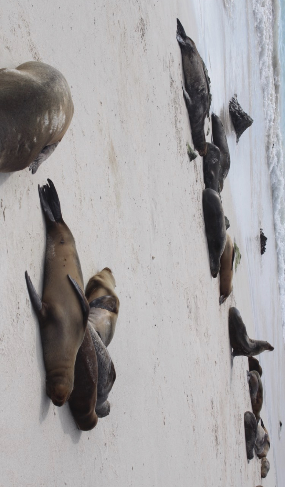
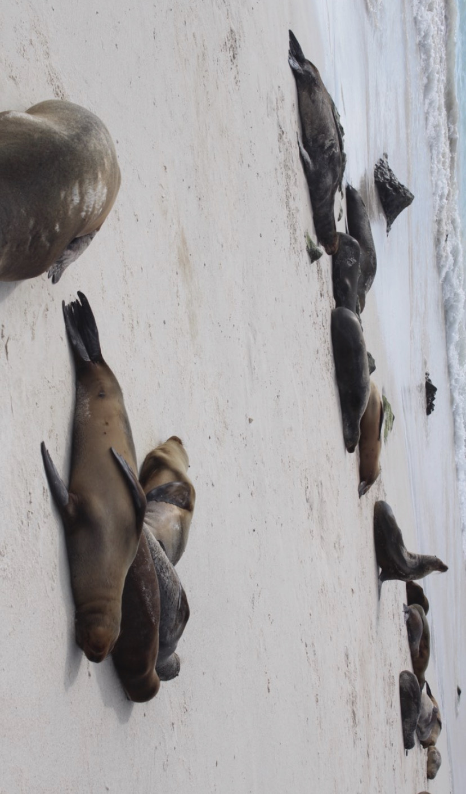

Photography
Photography has always been something I’ve loved. I first got into it during my GCSEs, where I learned how to use a camera properly and began thinking more deeply about composition, framing, and visual storytelling. After a long pause — life got busy — I’ve recently started picking it back up again, and it’s reminded me how much I enjoy capturing small moments, interesting textures, and the way light moves through different spaces.
What I love most are the improvised, casual shots — the kind that weren’t planned but end up meaning the most. My favourite photos are often the unexpected ones: a moment caught in passing, a funny face, a shadow that looked like something else. They feel honest. I think that’s what draws me back to photography — it freezes little moments that would otherwise fade. Looking back at old photos often feels like time-travel; they make memories feel more permanent, more alive.
I also enjoy editing and experimenting, using Photoshop to adjust tone, layer textures or create digital collages that remix and reimagine everyday scenes. Whether I’m shooting or editing, it’s become a quiet creative outlet, something I return to again and again with no purpose, simply because I love it.
 



.jpg)


.jpg)